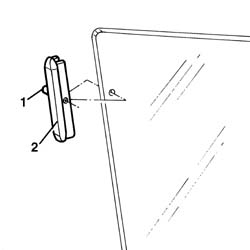

7010D12 fixed window glass element - r r
- Path
- Procedures > 70 FITTINGS > 7010 PASSENGER COMPARTMENT REAR SIDE DOORS > 7010D rear side door window glasses > 7010D12 fixed window glass element - r r
- Kind
- repair procedure (removal / refitting; the operation number is the code)
- Applies to
- all engines; all production periods
- Interactive page
- https://sloeber94.github.io/elrnDB-a147/en/#/3025711
Applies to: all engines; all production periods
 Removing
Removing
 Refitting
Refitting7010M10 rear side door electrically operated window switch r r
7010C44 interior handle panel - r r
7010E11 lh or rh rear door inner panel - r+r with fouling parts removed
5570T96 rear side speaker - r r
7010C11 rear side door outside handle-r r
7010D33 channel of door descending glass inner guide (one) lh or rh, of rear side door - r r
7010D18 rear side door descending window glass channel r r
7010D14 rear side door descending window glass - r r with door panel (and mount frame) removed
1. Extract the retaining pin.
2. Remove the lowering window fastening element.

Applies to: all engines; all production periods
Refitting
RemovingUse a new fastening element.
Fit the fastening element and insert the retaining pin. The retaining pin should be fully fitted so that it is flush with the surface of the fixing element.
7010D14 rear side door descending window glass - r r with door panel (and mount frame) removed
7010D18 rear side door descending window glass channel r r
7010D33 channel of door descending glass inner guide (one) lh or rh, of rear side door - r r
7010C11 rear side door outside handle-r r
5570T96 rear side speaker - r r
7010E11 lh or rh rear door inner panel - r+r with fouling parts removed
7010C44 interior handle panel - r r
7010M10 rear side door electrically operated window switch r r
Topics linked from this page (8)
- 5570T96 rear side speaker - r r
- 7010C11 rear side door outside handle-r r
- 7010C44 interior handle panel - r r
- 7010D14 rear side door descending window glass - r r with door panel (and mount frame) removed
- 7010D18 rear side door descending window glass channel r r
- 7010D33 channel of door descending glass inner guide (one) lh or rh, of rear side door - r r
- 7010E11 lh or rh rear door inner panel - r+r with fouling parts removed
- 7010M10 rear side door electrically operated window switch r r